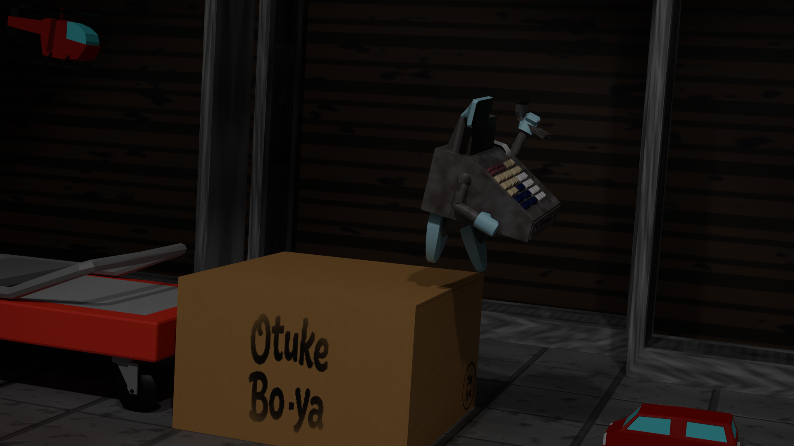
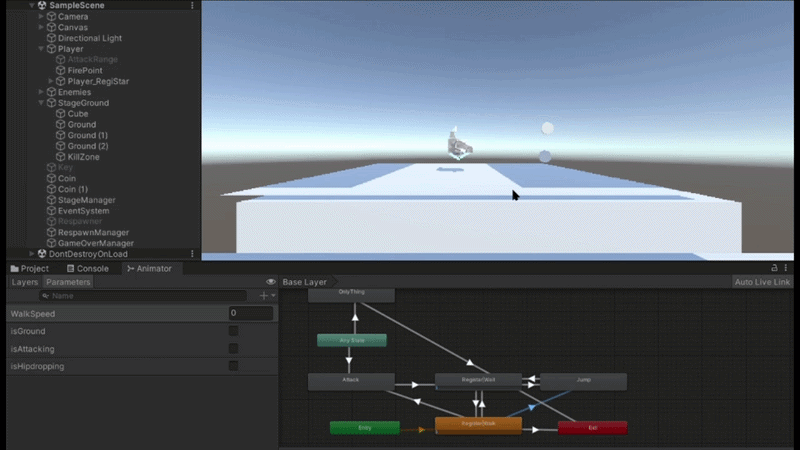

DataBackTo
「状態の記録と再現」をコアメカニクスに据えた、システム主導の2Dアクション

プロジェクト概要
プレイヤーの内部状態（HP・所持リソース・ジャンプ回数など）を任意で保存し、必要なタイミングで「過去の状態へ巻き戻す」ことでステージを攻略する、リソース管理型の2Dアクションゲームです。
本プロジェクトでは、仕様変更が頻繁に発生するチーム開発を前提とし、機能の追加やUIの変更に対して柔軟に対応できる「変更耐性の高いシステムアーキテクチャ」の構築に注力しています。

コアシステムの実装とアーキテクチャ（担当領域）
1. 開発の壁：Fat Controllerの発生と共同開発者からの指摘
開発初期はプレースホルダー（仮素材）を用いて最小の土台を最速で構築しました。しかし、そこから機能を追加していくにあたり、「初めてのUnity、初めての共同開発」であった私は、機能拡張のための正しい作法（アーキテクチャ）を知りませんでした。
結果として、「攻撃」「移動」「見た目」といった人間にとって直感的な機能単位でクラスを分割し、そこに処理を継ぎ足してしまいました。
これにより、一つのクラス内に入力検知・物理演算・ダメージ計算・マテリアル操作が混在する、いわゆる「Fat Controller（神クラス）」が生み出されてしまい、UIや他システムを繋ぎ込もうとした共同開発者から「コードが複雑化して連携しづらい」との指摘を受けることになりました。
2. MVPアーキテクチャに基づく大規模リファクタリング
指摘を受け、Unityにおけるシステム設計の定石を学び、その中でのMVP（Model-View-Presenter）パターンに基づいた「コンピューター視点での責務の分離（関心の分離）」を行う大規模なリファクタリングを実施しました。
- Model:
PlayerStatus,ReceiptSystem（データ保持・ロジック） - View:
PlayerInput,PlayerMovement,PlayerView（入力検知・物理演算・描画） - Presenter:
PlayerPresenter（イベントの購読と各コンポーネントの橋渡し）
// PlayerPresenter.cs の一部抜粋
// View(入力や物理)とModel(データ)を疎結合に繋ぐMediatorとして機能
private void Start()
{
// 入力（View）からの通知と、実行するロジックを紐づけ
input.OnJumpPressed += HandleJump;
input.OnAttackPressed += HandleAttack;
// 攻撃判定（View）から描画（View）への通知を直結
combat.OnAttackStateChanged += view.SetAttackAnimation;
combat.OnAttackColorChanged += view.SetAttackColor;
// データ（Model）の更新を検知し、描画（View）へ反映
receiptSystem.OnReceiptUpdate.AddListener(
receipts => view.UpdateReceiptDisplay(receipts.Count)
);
}これにより、各クラスが単一の責任を持つようになり、相方（UI担当）が新しい演出を追加する際にも、システム側のコードを一切改修せずに済む高い拡張性（疎結合化）を確保できました。失敗から設計の重要性を学び、自らの手でコードを改善しきったことは、本プロジェクトにおける最大の技術的成長です。
3. 独自のデータ構造を用いた「状態保存・復帰」システム
ゲームの核となる状態の巻き戻し機能は、Unityの既存機能に頼らず独自のデータ構造を用いて実装しました。
プレイヤーのHP、所持コイン、ジャンプ回数などの状態を ReceiptData という構造体（Struct）にパッケージ化し、それを List で履歴として保持しています。これにより、任意のタイミングでのスナップショット作成と、データ参照・上書きによるシームレスな過去への復帰を低負荷で実現しました。
4. 3Dモデルを用いた2D表現とAnimator制御
本作は2Dアクションですが、キャラクターやプロップにBlenderで自作した3Dモデルを採用し、Perspectiveカメラで奥行きのあるビジュアルを構築しています。
UnityのAnimator制御においては、状態遷移の設計にこだわりました。
「待機や移動などの基本動作はEntryからの遷移で構築し、ダメージや緊急回避など、どのアクション中でも即座に割り込む必要がある挙動にはAny Stateを活用する」とルールを明確化することで、複雑な操作入力に対してもモデルの挙動が破綻しないアニメーション制御を実現しています。

5. ShaderGraphにおける「スキャン演出」
レジが状態を保存するというコンセプトの視覚化のため、ShaderGraphを用いてスキャン演出を実装しました。
PositionノードとSplitノードで範囲を指定しOneMinusで反転させたマスクに、赤色を乗せるというシンプルな実装になっていますが、これにより赤い横線がモデル表面を文字通り読み込むように通過していきます。
また「片手を挙げる」モーションも追加しています。これは既存のガッツポーズモーションを切り出して作成しています。
演出を完全に終えてからレシートが追加されるようにコールバック関数にて実装しました。
これにより長押し時間だけであった全体時間が、「長押し＋演出時間」となりゲーム体験が変化したため議論を重ね調整しました。

プロジェクト管理と開発フローの学び
「変更耐性」を優先したMVP（Minimum Viable Product）アプローチ
仕様が未定のまま進むプロジェクトが頓挫するのを防ぐため、開発工程を2段階に分けました。
前半は「最適化よりも、変更に対する損失を最小化する」ことを目標とし、プレースホルダー（仮素材）を用いてコアとなるゲームループを最速で構築しました。この最小構成の土台（MVP）が早期に動いていたことで、後半の体験拡張や相方のUI実装を、手戻りなく並行して進めることができました。
GitHubのブランチ戦略における失敗と教訓
バージョン管理において、main ブランチの上に DevelopOrigin という仮想の統合ブランチを設け、そこから各自が作業ブランチを切るフローを採用しました。
しかし、「誰がいつ main を更新するのか」というルールが曖昧だったため、DevelopOrigin のみが更新され続けるという不安定な状態に陥りました。
この経験から、少人数開発であっても、プルリクエストの承認ルールや統合のタイミング（スプリントの区切りなど）を明確に定めておく必要性を痛感しました。
一方で、テキスト（YAML形式）で管理されるUnityのSceneファイルはコンフリクトが発生しやすく、解消が困難なケースがあります。深刻なコンフリクトに備え、「いつでも上書き・参照可能な最新の安定バージョン」として統合ブランチを運用すること自体の意義も同時に学ぶことができた、実務に直結する価値ある失敗経験となりました。